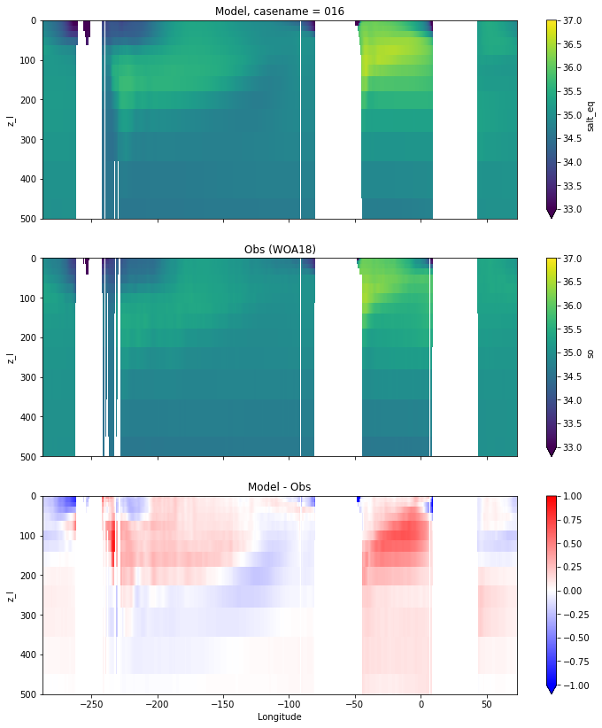

Equatorial plots
Contents
Equatorial plots¶
%%capture
# comment above line to see details about the run(s) displayed
from misc import *
import intake, yaml
%matplotlib inline
# load obs
catalog = intake.open_catalog('/glade/u/home/gmarques/libs/oce-catalogs/reference-datasets.yml')
obs = catalog['woa-2018-tx2_3v2-annual-all'].to_dask()
obs['xh'] = grd[0].xh
obs['yh'] = grd[0].yh
thetao_obs = obs.thetao
salt_obs = obs.so
obs_label = catalog['woa-2018-tx2_3v2-annual-all'].metadata['prefix']+' '+str(catalog['woa-2018-tx2_3v2-annual-all'].metadata['version'])
def plot_comparison(model, var, obs, vmin, vmax, diff, cname):
fig, ax = plt.subplots(nrows=3, ncols=1,
sharex=True,sharey=True,
figsize=(12,14))
ax1 = ax.flatten()
model[var].plot(ax=ax1[0], ylim=(500,0),
y="z_l",vmin=vmin, vmax=vmax,
yincrease=False);
obs.sel(yh=0.,
method="nearest").plot(ax=ax1[1], ylim=(500, 0),
y="z_l",vmin=vmin, vmax=vmax,
yincrease=False);
(model[var] - obs.sel(yh=0.,
method="nearest")).plot(ax=ax1[2], ylim=(500, 0),
y="z_l", cmap="bwr", vmin=-diff, vmax=diff,
yincrease=False);
ax[0].set_title('Model, casename = {}'.format(cname)); ax[0].set_xlabel('')
ax[1].set_title('Obs (WOA18)'); ax[1].set_xlabel('')
ax[2].set_title('Model - Obs'); ax[2].set_xlabel('Longitude');
return
Potential temperature¶
for path, case, i in zip(ocn_path, casename, range(len(casename))):
ds_temp = xr.open_dataset(ocn_path[i]+casename[i]+'_temp_eq.nc').rename({'zl':'z_l'})
plot_comparison(ds_temp,'temp_eq',thetao_obs,10,30,5,label[i])
Salinity¶
for path, case, i in zip(ocn_path, casename, range(len(casename))):
ds_salt = xr.open_dataset(ocn_path[i]+casename[i]+'_salt_eq.nc').rename({'zl':'z_l'})
plot_comparison(ds_salt,'salt_eq',salt_obs,33,37,1,label[i])

Miscellaneous¶
import glob
from IPython.display import Image, display
for i in range(len(casename)):
#print(i)
# List PNG files in the directory
png_files = glob.glob(ocn_path[i]+'/../PNG/Equatorial/*.png')
# Display PNG files in the Jupyter notebook
for png_file in png_files:
#print(png_file)
display(Image(filename=png_file))